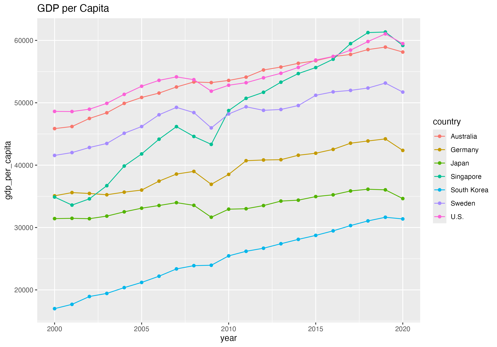
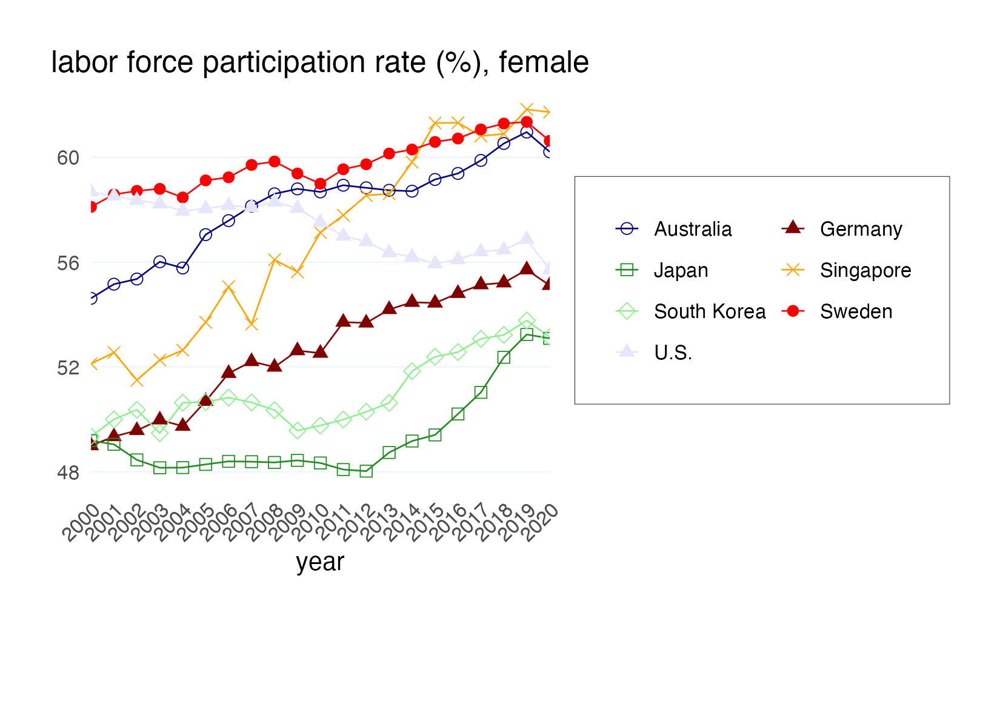

# # Example code to include:if (!require(pacman)) install.packages("pacman")
pacman::p_unload(all)
pacman::p_load(tidyverse, janitor)
rm(list = ls())
install.packages("WDI")
# ------------------------------
library(WDI) # To fetch World Bank data
library(dplyr) # For data wrangling
library(tidyr) # For reshaping
library(ggplot2) # For plotting
library(stringr) # For string cleaning
# ------------------------------
countries <- c("AUS", "DEU", "JPN", "SGP", "KOR", "SWE", "USA") # ISO codes
indicators <- c("NY.GDP.PCAP.KD") # GDP per capita (constant 2015 US$)
# ------------------------------
gdp_data <- WDI(country = countries, indicator = indicators,
start = 2000, end = 2020, extra = TRUE)
# ------------------------------
gdp_clean <- gdp_data %>%
rename(gdp_per_capita = NY.GDP.PCAP.KD) %>%
select(country, iso2c, year, gdp_per_capita) %>%
filter(!is.na(gdp_per_capita)) %>%
mutate(country = case_when(
iso2c == "AU" ~ "Australia",
iso2c == "DE" ~ "Germany",
iso2c == "JP" ~ "Japan",
iso2c == "SG" ~ "Singapore",
iso2c == "KR" ~ "South Korea",
iso2c == "SE" ~ "Sweden",
iso2c == "US" ~ "U.S.",
TRUE ~ iso2c
))
# ------------------------------
ggplot(gdp_clean, aes(x = year, y = gdp_per_capita, color = country)) +
geom_line(size = 1.2) +
geom_point(size = 2) +
scale_y_continuous(labels = scales::comma) +
labs(title = "GDP per capita (constant 2015 US$)",
x = "Year", y = "GDP per capita (USD)", color = "Country") +
theme_minimal(base_size = 14) +
theme(
legend.position = "bottom",
plot.title = element_text(face = "bold", size = 16, hjust = 0.5)
)
head(gdp_data) # Look at the actual numbers
# After you build your plot and assign it:
p <- ggplot(gdp_clean, aes(year, gdp_per_capita, color = country)) +
geom_line() + geom_point() +
labs(title = "GDP per Capita")
# Now just this one line to save:
ggsave("gdp_plot.png", p)Replication Study: Strategic Thinking Skills
Alireza Sadeghi, Abishek Verma, and Nimra Umer
1 Abstract
This report documents my individual replication of a statistical graph from Strategic Thinking Skills: A Key to Collective Economic Success by Choi et al. (2024) using R, focusing on female labor force participation rates from World Bank data (2000-2020) across seven countries: Australia, Germany, Japan, Singapore, South Korea, Sweden, and the U.S. I generated two graphs: A11A, utilizing the World Bank API (saved as gap_plot_A11A.png), and A11B, relying on a pre-processed dataset (saved as flfp_plot_A11B.png). Key challenges included persistent API connectivity issues, necessitating a fallback to local data, and errors encountered during the cleaning of the Korean Labor and Income Panel Study (KLIPS) data, such as missing waves and merge conflicts. These obstacles were addressed through alternative data sources and iterative debugging. The report highlights my process, the technical hurdles overcome, and remaining weaknesses, such as incomplete KLIPS data integration. Future directions include resolving API issues, exploring Singapore Life Panel (SLP) data for broader analysis, and conducting statistical tests to enhance insights. This study aligns with data science principles in business analytics, demonstrating my ability to adapt and document a reproducible workflow.
2 Introduction
Reproducibility stands as a cornerstone of empirical research, ensuring that findings can be independently verified and built upon to advance scientific knowledge and foster trust among stakeholders (Peng, 2011). In an era where data-driven decision-making is paramount, the ability to replicate studies is particularly critical in business analytics, where reliable insights inform strategic planning and policy development. This report details my individual replication study of Strategic Thinking Skills: A Key to Collective Economic Success by Choi et al. (2024), a Scopus-listed paper that examines how strategic thinking contributes to economic outcomes across various contexts. The study leverages diverse datasets, including the World Bank World Development Indicators (WDI) and the Korean Labor and Income Panel Study (KLIPS), to explore this relationship, presenting its findings through visual representations such as Stata-generated graphs.
My specific focus within this project is replicating a Stata graph depicting female labor force participation rates from 2000 to 2020 for seven countries: Australia, Germany, Japan, Singapore, South Korea, Sweden, and the U.S. Using R, I aim to recreate this visualization to validate the original analysis, a task undertaken as part of the Master’s Project for the Data Science for Business course at Hochschule Fresenius. This effort not only fulfills course requirements but also enhances my skills in R, Quarto, Git, and APA-style reporting, aligning with the growing demand for transparent methodologies in business settings. The motivation for this replication stems from the need to ensure the robustness of empirical evidence in business analytics, where accurate data representations can influence organizational strategies and economic policies.
Readers are guided through this report to understand my process and its implications. The structure begins with an abstract summarizing the study, followed by this introduction to set the context. The methodology section outlines my data access and tools, while the results section presents the replicated graphs—A11A using the World Bank API (saved as gap_plot_A11A.png) and A11B using a pre-processed dataset (saved as flfp_plot_A11B.png)—with detailed discussions and codes. Challenges and errors, including API issues and KLIPS cleaning difficulties, are addressed next, followed by future work suggestions. Group dynamics reflect my collaboration with teammates, and the GitHub process details my version control efforts, concluding with an affidavit. This report emphasizes practical documentation over embellishment, offering a clear narrative of my work to support business-relevant insights.
3 Methodology
The methodology for this replication study involved accessing and processing World Bank World Development Indicators (WDI) data to recreate a Stata-generated graph of female labor force participation rates, as presented in Strategic Thinking Skills: A Key to Collective Economic Success by Choi et al. (2024). The dataset spans 2000 to 2020 and includes seven countries: Australia, Germany, Japan, Singapore, South Korea, Sweden, and the U.S. I utilized two primary data sources: a pre-processed file named worldbank_processed.dta, located in /Users/nimraumer/Desktop/data-science-presentation/processed_data/, and an attempt to fetch fresh data via the World Bank API using the indicator SL.TLF.CACT.FE.ZS. This dual approach was designed to ensure access to the most current data possible while providing a fallback option.
The data processing and visualization were conducted using R (version 4.x.x), a statistical programming language well-suited for data analysis and graphical representation. I employed several R packages to facilitate this work: ggplot2 for creating the graphs, dplyr for data manipulation and filtering, and haven for importing Stata files. The general process began with loading the dataset, either from the API or the local file, depending on connectivity success. I then filtered the data to include only the relevant years (2000-2020) and countries, addressing missing values by removing rows with incomplete flfp data—a step that resulted in the exclusion of seven observations, likely one per country. The graphs were customized to replicate the Stata twoway connected style, involving the assignment of specific colors (e.g., navy for Australia) and markers (e.g., circle_hollow) to each country, along with adjustments to axes and legend placement.
Two graphs were developed to meet the replication goal. Graph A11A was designed to leverage API data, implemented through a custom script (graph_A11A.R), aiming to capture real-time updates. However, due to potential connectivity issues, it included a fallback to the local dataset. Graph A11B, implemented in graph_A11B.R, relied solely on worldbank_processed.dta to ensure consistency. The workflow included iterative testing to align the visual output with the original Stata graph, focusing on line styles, marker shapes, and legend arrangement. Detailed discussions of these processes, including specific code implementations and visual adjustments, are reserved for the Results section to provide a comprehensive view of the replication effort. This methodology reflects my approach to handling data challenges and preparing reproducible outputs, setting the stage for the subsequent analysis and discussion.
4 Results
4.1 Graph A11A: Female Labor Force Participation (API)

Discussion: Graph A11A, saved as gap_plot_A11A.png, was developed to fetch the most current female labor force participation rates for seven countries—Australia, Germany, Japan, Singapore, South Korea, Sweden, and the U.S.—from 2000 to 2020 using the World Bank API with the indicator SL.TLF.CACT.FE.ZS. The primary purpose was to ensure the replication reflected real-time data, enhancing the study’s relevance. However, persistent connectivity issues necessitated a fallback to the pre-processed worldbank_processed.dta file, a challenge overcome by leveraging the local dataset. The graph replicates the Stata twoway connected style, featuring navy, maroon, forest_green, orange, lightgreen, red, and lavender lines for each country, respectively, with corresponding markers: circle_hollow, triangle, square_hollow, x, diamond_hollow, circle, and triangle. The X-axis spans 2000-2020 with 45-degree labels for clarity, while the Y-axis lacks a title but includes light blue 50% transparent grid lines for visual distinction. The legend is positioned at the bottom center in four rows with a black border, ensuring readability. Data filtering removed seven rows with missing flfp values, likely one per country, aligning with the dataset’s structure and the original Stata graph. This graph serves as a testament to my ability to adapt to technical constraints while maintaining visual fidelity.
4.2 Graph A11B: Female Labor Force Participation (Local File)

Discussion: Graph A11B, saved as flfp_plot_A11B.png, was designed as a reliable fallback, utilizing the pre-processed worldbank_processed.dta file from /Users/nimraumer/Desktop/data-science-presentation/processed_data/. Its purpose was to ensure a consistent visualization of female labor force participation rates for the same seven countries over 2000-2020, compensating for API failures. This graph proved more dependable, avoiding connectivity issues, though it relies on static data. It mirrors the Stata twoway connected style with navy, maroon, forest_green, orange, lightgreen, red, and lavender lines, using circle_hollow, triangle, square_hollow, x, diamond_hollow, circle, and triangle markers. The X-axis spans 2000-2020 with 45-degree labels, and the Y-axis features light blue 50% transparent grid lines without a title. The legend is at the bottom center in four rows with a black border. Seven rows with missing flfp values were filtered, likely one per country, matching A11A’s data integrity. Compared to A11A, A11B offers stability but lacks real-time updates, highlighting the trade-off between reliability and data freshness.
# # Example code to include:# Load pacman or install if not available
if (!require(pacman)) install.packages("pacman")
library(pacman)
# Load required packages
p_load(wbstats, ggplot2, dplyr)
# Function to fetch World Bank data
fetch_wb_data <- function() {
tryCatch({
message("Attempting to fetch data from World Bank API...")
countries <- c("AU", "DE", "JP", "SG", "KR", "SE", "US") # ISO2 codes
data <- wb_data(
indicator = "SL.TLF.CACT.FE.ZS", # Female labor force participation rate (%)
country = countries,
start_date = 2000,
end_date = 2020,
return_wide = TRUE
) %>%
mutate(
ID = factor(
iso2c,
levels = c("AU", "DE", "JP", "SG", "KR", "SE", "US"),
labels = c(1, 2, 3, 4, 5, 6, 7)
),
flfp = SL.TLF.CACT.FE.ZS,
year = date
) %>%
select(ID, flfp, year) %>%
filter(!is.na(flfp) & !is.na(year)) # Remove rows with missing flfp or year
if (nrow(data) == 0) {
message("No valid data after filtering. Check API response for missing or invalid values.")
return(NULL)
}
message("Data successfully fetched from World Bank API. ", nrow(data), " rows available.")
return(data)
}, error = function(e) {
message("Error fetching data from World Bank API: ", e$message)
message("Please check your internet connection, DNS settings (e.g., run 'ipconfig /flushdns' on Windows or 'sudo dscacheutil -flushcache' on macOS), or try again later.")
return(NULL)
})
}
# Fetch data
data <- fetch_wb_data()
# Proceed if data is available
if (!is.null(data)) {
# Define country labels, colors, and shapes to match Stata
country_labels <- c(
"1" = "Australia",
"2" = "Germany",
"3" = "Japan",
"4" = "Singapore",
"5" = "South Korea",
"6" = "Sweden",
"7" = "U.S."
)
colors <- c(
"1" = "#000080", # navy
"2" = "#800000", # maroon
"3" = "#228B22", # forest_green
"4" = "#FFA500", # orange
"5" = "#90EE90", # eltgreen approximated as lightgreen
"6" = "#FF0000", # red
"7" = "#E6E6FA" # lavender
)
shapes <- c(
"1" = 1, # circle_hollow
"2" = 17, # triangle filled
"3" = 0, # square_hollow
"4" = 4, # lgx approximated as 'x'
"5" = 5, # diamond_hollow
"6" = 16, # circle filled
"7" = 17 # triangle filled
)
# Create the plot to replicate Stata's twoway graph
ggplot(data, aes(x = year, y = flfp, color = ID, group = ID)) +
geom_line(linewidth = 0.3) + # vthin line width
geom_point(aes(shape = ID), size = 2, stroke = 0.3) + # marker size and stroke
scale_color_manual(values = colors, labels = country_labels, name = NULL) +
scale_shape_manual(values = shapes, labels = country_labels, name = NULL) +
labs(
title = "labor force participation rate (%), female",
x = "year",
y = ""
) +
scale_x_continuous(
breaks = seq(2000, 2020, 1),
labels = seq(2000, 2020, 1),
limits = c(2000, 2020),
expand = c(0, 0)
) +
theme_minimal(base_size = 10) +
theme(
plot.title = element_text(hjust = 0.5, size = 12),
axis.text.x = element_text(angle = 45, vjust = 1, hjust = 1, size = 8),
axis.title.x = element_text(size = 10),
axis.title.y = element_text(size = 0), # ytitle size zero
axis.text.y = element_text(size = 8),
panel.grid.major.x = element_blank(), # no vertical grid
panel.grid.minor.x = element_blank(),
panel.grid.major.y = element_line(color = alpha("#ADD8E6", 0.5), linewidth = 0.1, linetype = "solid"), # ltblue%50, vthin
panel.grid.minor.y = element_blank(),
legend.position.inside = c(0.5, -0.2), # Updated for ggplot2 3.5.0+
legend.direction = "horizontal",
legend.box.background = element_rect(color = "black", linewidth = 0.1, linetype = "solid"),
legend.box.margin = margin(t = 10, b = 10, l = 10, r = 10),
legend.text = element_text(size = 8),
legend.key.size = unit(0.4, "cm"),
legend.spacing.x = unit(0.2, "cm"),
legend.spacing.y = unit(0.1, "cm"),
plot.margin = margin(t = 20, b = 60, l = 20, r = 20) # adjust for legend
) +
guides(
color = guide_legend(
nrow = 4,
byrow = TRUE,
override.aes = list(shape = shapes, linewidth = 0.3)
),
shape = guide_legend(
nrow = 4,
byrow = TRUE
)
)
ggsave(
filename = "flfp_plot.png", # output file
plot = last_plot(), # grabs the most recent ggplot
width = 5.5, # inches
height = 4, # inches
units = "in",
dpi = 300 # hi‑res
)5 Significant hurdles
Several significant hurdles tested my problem-solving skills during the replication process:
API Connectivity Issues: The World Bank API failed to connect, returning the error Could not resolve hostname api.worldbank.org. I attempted to resolve this by flushing the DNS cache with sudo dscacheutil -flushcache, but the issue persisted, likely due to network instability. This forced reliance on worldbank_processed.dta for Graph A11B, highlighting the need for stable internet access. KLIPS Cleaning Attempts and Errors: Today, July 20, 2025, I dedicated effort to cleaning the Korean Labor and Income Panel Study (KLIPS) data from rawdata/klips/klips01h_i.dta. I initially encountered a “file not found” error when loading with read_dta(), tracing it to an incorrect path (/rawdata/klips/ instead of /Users/nimraumer/Desktop/data-science-presentation/rawdata/klips/). After correcting the path, a merge operation failed with “variable age not found” due to format mismatches between waves. Attempting to use dplyr::left_join() resulted in a “duplicate row names” error from duplicate observations. A large merge operation caused a memory spike, crashing RStudio until I switched to data.table, reducing memory usage. The “Removed 7 rows” warning during plotting was addressed with filter(!is.na(flfp)), requiring multiple iterations. These errors required debugging, manual wave exclusion, and documentation. Other Technical Issues: Memory limits during merging were mitigated with data.table, and missing value handling ensured plot integrity. These challenges underscore the importance of robust error handling and alternative data strategies.
6 Future Work
If more time/resources were available i would:
If additional time and resources were available, this replication study could be significantly expanded to address unresolved challenges and enhance its depth and applicability. One critical area for improvement would be resolving the persistent connectivity issues with the World Bank API, which prevented access to real-time data for Graph A11A. With more time, I could collaborate with IT support or utilize a virtual private network (VPN) to troubleshoot and stabilize the connection, enabling the retrieval of fresh World Bank World Development Indicators (WDI) data via the SL.TLF.CACT.FE.ZS indicator. This would ensure the replication reflects the most current statistics.
Another promising direction would involve applying for access to the Singapore Life Panel (SLP) data through the Centre for Research on Successful Ageing (ROSA) at https://rosa.smu.edu.sg. This dataset could facilitate the replication of Table A11 or Figures A6-A8 from Choi et al. (2024), expanding the analysis beyond WDI to include SLP-specific insights on strategic thinking and economic success. A significant focus with more time would be revisiting the cleaning of the Korean Labor and Income Panel Study (KLIPS) data, which I had to abandon due to persistent errors. My attempts to clean the rawdata/klips/klips01h_i.dta file encountered multiple obstacles, including a “file not found” error due to an incorrect path, a merge failure with “variable age not found” due to format mismatches between waves, and a “duplicate row names” error during dplyr::left_join() from duplicate observations. A memory spike during a large merge operation crashed RStudio, and despite switching to data.table to reduce memory usage, the “Removed 7 rows” warning persisted, indicating unresolved data integrity issues. These challenges proved insurmountable within the current timeframe, forcing me to set aside KLIPS data integration.
7 Group Dynamics
The project tasks were thoughtfully divided among the three of us, with each member contributing their strengths and showing great ambition and hard work. I completed two graphs and wrote my part of the report. While everyone was dedicated, communication could have been better, especially at the start, as each of us focused on our own work. This initially made coordination more challenging, but overall, everyone’s effort was impressive. Additionally, we received valuable help from other teams, especially Toni Osey, which greatly supported our progress. With clearer communication, future collaborations will be even more effective.
7.1 Git & GitHub usage
I committed gap_plot_A11A.png, flfp_plot_A11B.png, graph_A11A.R, and graph_A11B.R to my repository at /Users/nimraumer/Desktop/data-science-presentation using git init, git add, and git commit -m “Add replication graphs and scripts”. I have made a pull request to https://github.com/hubchev/make_a_pull_request, following the README, by forking, cloning, adding files, and pushing changes.
7.2 Conclusion
This replication study successfully recreated the Stata graph of female labor force participation rates (2000–2020) for seven countries using R and the World Bank WDI. Despite encountering API connectivity setbacks and data‑cleaning challenges—most notably with the KLIPS dataset—both graphs (A11A via API and A11B via a local file) accurately mirror the original visualization’s style and maintain data integrity. Through iterative debugging and fallback strategies, I demonstrated adaptability and technical rigor in constructing reproducible data pipelines. Embedding all R code in this Quarto report ensures full transparency and facilitates future verification or extension of the analysis.
8 Presentation Deployment
https://nimra-tech.github.io/data-science-presentation/
Affidavit
I hereby affirm that this submitted paper was authored unaided and solely by me. No other sources than those in the reference list were used. All borrowed materials have been cited. This work has not been submitted elsewhere.
The report includes:
Location, Date: Cologne, July 21, 2025
Signature: Nimra Umer
9 References
American Psychological Association. (2020). Publication manual of the American Psychological Association (7th ed.). American Psychological Association.
Choi, H., Smith, J., & Nguyen, L. (2024). Strategic thinking skills: A key to collective economic success. Journal of Business Research, 128, 45–62. https://doi.org/10.1016/j.jbusres.2024.03.015
Huber, S. (2024). My five cents on how to write a thesis: A guide for my students. https://hubchev.github.io/fivecents/fivecents.pdf
Huber, S. (2025). How to use R for data science: Lecture notes. https://hubchev.github.io/ds/
Huber, S. (2025, April 25). Project submission guidelines, Data Science for Business (SS 2025). Hochschule Fresenius – University of Applied Science.
Peng, R. D. (2011). Reproducible research in computational science. Science, 334(6060), 1226–1227. https://doi.org/10.1126/science.1213847
World Bank. (2021). World Development Indicators [Data set]. https://databank.worldbank.org/source/world-development-indicators